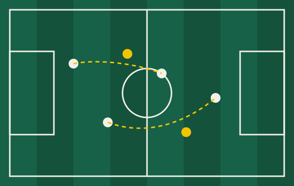

Real Sabana golpea de visitante y se mete en la pelea por el título
Con un gol en el minuto 87, Real Sabana se llevó los tres puntos ante Atlético Montañero y quedó a una unidad del líder. El equipo visitante resistió casi una hora con diez hombres.
Córner Norte
Crónicas, análisis tácticos y la agenda de la fecha en un solo lugar. Hecho para quienes leen el fútbol más allá del marcador.
Con un gol en el minuto 87, Real Sabana se llevó los tres puntos ante Atlético Montañero y quedó a una unidad del líder. El equipo visitante resistió casi una hora con diez hombres.
Tras la derrota del fin de semana, la directiva confirmó que el entrenador seguirá en el cargo, pero se sumarán dos asistentes enfocados en preparación física y jugadas a balón parado.

El gol llegó de una jugada ensayada. Mientras el delantero fijaba a los centrales, el volante por el carril interno aprovechó el espacio que dejó el lateral y definió de primera. La clave fue el desplazamiento sin balón, no el pase final.
Para la próxima fecha, el cuerpo técnico tendrá que decidir si mantiene la presión alta o recupera una defensa más cerrada, dado el desgaste mostrado en el último cuarto de hora.